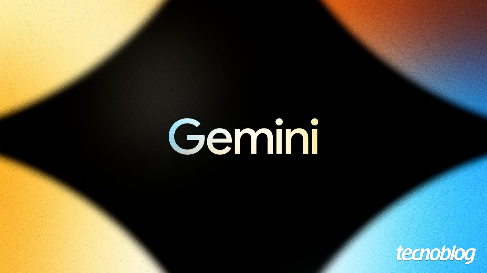

Gemini gratuito vai ficar só com o modelo Flash Lite a partir de sexta (9)
Assinantes do Google AI Plus perdem o acesso ao Pro; Deep Think passa a fazer parte do plano AI Pro.

Quem usa o Gemini sem pagar vai notar uma mudança a partir da próxima sexta-feira (9): as contas gratuitas deixam de ter acesso aos modelos Flash e Pro e passam a contar apenas com o Flash Lite, a versão mais leve da família, segundo o Tecnoblog.
O ajuste também atinge o Google AI Plus, plano que custa R$ 24,99 por mês no Brasil. Esses assinantes perdem o modelo Pro, mas continuam com o Flash e o Flash Lite. O conjunto completo de modelos fica restrito aos planos Google AI Pro e Google AI Ultra; como incentivo, o AI Pro ganha o Deep Think, modo de raciocínio avançado que até agora era exclusivo do Ultra.
As mudanças valem no mundo todo e afetam os aplicativos para Android e iOS e também a versão web. A página de ajuda do Google indica que os assinantes do AI Plus serão avisados por e-mail e que a transição pode ser gradual, sem necessariamente acontecer toda no dia 9.
Na mesma atualização, o Google passa a permitir que o usuário escolha níveis de esforço (baixo, médio ou alto) em todos os modelos, definindo quanto cada um deve raciocinar antes de responder. O Gemini 4 Argon, anunciado recentemente para tarefas complexas, segue disponível apenas para um grupo de testadores.